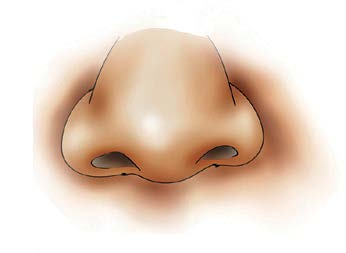

Caring for the tongue
The tongue is cared by:
(a)Cleaning your mouth and tongue regularly.
(b)Avoiding very hot or cold foods to protect the taste buds of your tongue;
(c)Not tasting substances that you do not know because some of them may be poisonous; and
(d)Not piercing your tongue.
The nose
The nose is the sense organ for smelling. It protrudes from the front part of the face and has two holes called nostrils, which are separated by cartilage. Figure 7 shows the nose. The main function of the nose is to smell different substances. Another function of the nose is to allow air into and out of the lungs during breathing. The information on smell is sent to the brain for interpretation.

Figure 7: Nose